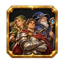
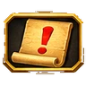

La Cité submergée niveaux 35 à 40 Nouveau
Au large de Strangleronce, la vieille cité troll d'I'lalai est remontée des flots. Des trolls morts-vivants, les nagas Écaille-de-mer et les pirates sel-augures se la disputent, sous le regard de Min'loth le Serpent. C'est l'un des neuf nouveaux donjons de Forever, ouvert à l'Alliance comme à la Horde, sans clé.
📅 Mise à jour le 24 novembre 2026🛠 Patch 1.60.1.71037
Accès
 Entrée Vallée de Strangleronce 21.4, 27.9
Entrée Vallée de Strangleronce 21.4, 27.9
5 joueurs · niveaux 35 à 40
8 quêtes · 6 boss
L'entrée est sous l'eau, à l'ouest du Récif infâme : une grotte marquée par une grande tablette de pierre. Prévois une potion de respiration aquatique. Côté Horde, pars du campement Grom'gol ; côté Alliance, remonte la côte depuis Baie-du-Butin.
Toutes les zones sont sur notre carte interactive.
Carte et parcours
Plan du donjon en jeu : capture à venir.
- Après Zul'Alai, la cité s'ouvre sur un grand bassin central : Var'Taka est dans le bâtiment au sud, l'épave du capitaine Lèveffroi dans le secteur des pirates.
- Les quatre tablettes d'I'lalai (quêtes « La cité Submergée » et « Cap sur les eaux troubles ») : en bas de l'escalier à gauche après Zul'Alai, près de la salle de Var'Taka, dans un grand crâne du secteur des pirates, et près de la salle de Min'loth.
- Une fois les deux perles activées, le chemin mène à la Moelle impérissable puis à Min'loth le Serpent.
La vidéo du donjon
 ▶
▶
La Cité submergée : donjon complet, avec les 6 boss jusqu'à Min'loth le Serpent, sur la chaîne YouTube Mygale TV. Toutes nos vidéos sont sur la page Vidéos.
Les boss et leur butin
1 Zul'Alai
Un troll mort-vivant. Sors de sa portée pendant Heurt monstrueux (étourdissement), dissipe Frappe moisie, et accélère sous 30 % : Serment immortel le soigne et le rend plus rapide.
2 Var'Taka
Le chef des nagas Écaille-de-mer, avec deux prêtresses : contrôles-en une et tue l'autre. Le tank le tourne dos au groupe (Enchaînement) et revient vite s'il est harponné. Active la perle lumineuse après le combat.
3 Capitaine Lèveffroi Captain Dreadrise
Le chef des pirates, sur son épave. Nettoie les pirates autour avant, garde une interruption pour la Salve d'éclairs d'eau, et libère vite un joueur pris dans la Saumure. Il craint les étourdissements. Active la perle après le combat.
4 Élémentaire primitif Primeval Elemental
Boss facultatif, dans les tunnels noyés près des archives : détruis toutes les offrandes de sa salle pour le faire venir, et attention à son souffle.
5 Moelle impérissable Deathless Marrow
Éclair de sang touche tout le groupe et des renforts arrivent sans cesse : le tank les regroupe, on tue d'abord les gardiens qui étourdissent, sans oublier le boss. Il porte l'Idole antique des Gurubashi.
6 Min'loth le Serpent Min'loth the Serpent
Le dernier boss, en deux phases. En troll : protège le tank contre Torrent et prépare les soins pour Déluge. En serpent, il revient avec toute sa vie : dissipe le poison et prévois les peurs (le Totem de séisme aide). Un coffre attend dans l'épave voisine.
Taux relevés par Forever Changes. Les objets de ce nouveau donjon n'ont pas encore de nom français dans les données du jeu : on garde le nom anglais pour l'instant. Passe la souris sur un objet pour voir ses caractéristiques (info-bulle Wowhead), ou clique pour ouvrir sa fiche.
Les quêtes du donjon
Le seul bon Écaille-de-mer… niveau 38 Horde
Donnée par : Commandant Aggro'gosh, Grom'gol, Strangleronce (32.2, 28.8)
Objectif : Tuer Var'Taka.
Récompense : Tidesoaked Leggings · Naga Priestess's Mantle
Suit « Des adversaires sous les flots », du même PNJ. Dès le niveau 30.
La cité Submergée niveau 40 Horde
Donnée par : Kin'weelay, Grom'gol, Strangleronce (32.2, 27.8)
Objectif : Faire des reproductions des quatre tablettes d'I'lalai avec la peau et le charbon.
Au bout de la suite « Le Récif infâme », « Les anciennes légendes des Gurubashi » et « À la recherche de la cité perdue ». Dès le niveau 30.
L'idole des anciens Gurubashi niveau 40 Horde
Donnée par : Mazu'kon, Mulgore (32.6, 20.6)
Objectif : Rapporter l'Idole antique des Gurubashi, portée par la Moelle impérissable.
Dès le niveau 30.
Cap sur les eaux troubles niveau 40 Alliance
Donnée par : Maître des traditions Dibbs, Austrivage, Contreforts de Hautebrande (50.6, 57.0)
Objectif : Faire des reproductions des quatre tablettes d'I'lalai.
La suite commence au Camp des rebelles de Strangleronce (Sergent Yohwa, puis frère Nimetz) et mène à Dibbs. Dès le niveau 30.
Les magies de la cité Submergée niveau 40 Alliance
Donnée par : Maître des traditions Dibbs, Austrivage, Contreforts de Hautebrande (50.6, 57.0)
Objectif : Récupérer 5 fétiches d'I'lalai sur les trolls du donjon.
Dès le niveau 30.
Les secrets des anciens Gurubashi niveau 40 Alliance
Donnée par : Archimage Timear, devant la Cité de Dalaran, Montagnes d'Alterac (15.6, 73.6)
Objectif : Rapporter l'Idole antique des Gurubashi, portée par la Moelle impérissable.
Dès le niveau 34.
Sel-augures véreux niveau 40 Alliance et Horde
Donnée par : Krazek, Baie-du-Butin, Strangleronce (27.0, 77.2)
Objectif : Rapporter 10 artéfacts vaudou pris aux pirates sel-augures.
Récompense : Rusted Troll War Belt · Saltseer's Helm
Dès le niveau 34.
Le capitaine sel-augure niveau 40 Alliance et Horde
Donnée par : Krazek, Baie-du-Butin, Strangleronce (27.0, 77.2)
Objectif : Tuer le capitaine Lèveffroi et 3 légistes sel-augures.
Récompense : Mutinous Cuffs · South Seas Shroud
Dès le niveau 34.
Conseils
- Prends toutes les quêtes avant d'entrer : elles rapportent près de 48 000 points d'expérience par faction.
- Il faut activer les deux perles lumineuses (après Var'Taka et après le capitaine Lèveffroi) pour ouvrir le chemin vers la fin : tuer les deux boss ne suffit pas.
- Évite Zin'aka, le requin qui tourne dans le grand bassin central.
- Les monstres reviennent deux heures après leur mort : pas de panique si tu dois ressortir.
- Trois boss rares peuvent apparaître : Umbra et son escorte, Gill (dans les tunnels de l'élémentaire, attention à sa dynamite) et « Pyromancien » Braxton chez les pirates.
Noms des quêtes, des PNJ et des objets d'après les données du jeu (Polestar, CC BY 4.0, et Factoruide/Questie) ; butin et informations complémentaires : JudgeHype, Forever Changes (butin).